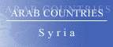
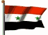

The Country & People of Syria
This page contains links to sites in Syria and Syria related sites.
For Middle East, North Africa, Arab and regional information visit Arab Countries
Hints:
- Use the "FIND" function in the Edit menu of your browser to search the page
- Use translating services in Chrome or Bing Bar in Internet Explorer to view page and/or linked websites in your language
General Info
* Business
* Culture
* Education
* History
* Media
* Organizations
* Travel
* Gateways
* Arab Countries
Syria, officially Syrian Arab Republic, republic (1995 est. pop. 15,452,000), 71,467 sq mi (185,100 sq km), SW Asia, bordered by Israel, Lebanon, and the Mediterranean Sea (W), Turkey (N), Iraq (E), and Jordan (S). Principal cities include Damascus (the capital) and Aleppo. Most of Syria is occupied by the Syrian Desert, which is crossed by the Euphrates R. In the west are the Anti-Lebanon Mts., including Mt. Hermon (9,232 ft/2,814 m), Syria's highest point; in the southwest the fertile plain of Hawran extends from the Jabal al-Duruz Mts. to the Sea of Galilee. Major crops include wheat, fruit and vegetables, barley, sugar beets, cotton, and tobacco; poultry, cattle, and sheep are raised. The state plays a major role in the economy, and a large-scale industrialization program begun in the early 1960s has diversified the formerly agricultural economy. Petroleum production provides the leading export. Refined petroleum, textiles, processed foods, chemicals, and precision-engineered products are the chief manufactures. The Euphrates Dam supplies most of the nation's electric power. Most Syrians are Arabic-speaking Muslims, mainly Sunnite with significant Alawite and Druze minorities; there are also Kurds, Armenians, and Circassians. About 10% of the people are Christian, mainly Orthodox. Arabic is the official language.
History
Situated on trade and military routes between the Mediterranean and Mesopotamia, Syria (which historically included all of modern Syria and Lebanon, and parts of Israel, Jordan, Iraq, and Saudi Arabia) has always been an object of foreign conquest.
Settled (2100 BC) by the Amorites, a Semitic people from the Arabian peninsula, it fell to the Hittites (15th–13th cent BC), the Assyrians and Babylonians (11th–6th cent. BC), the Persians (6th–4th cent. BC), and the Greeks (333 BC).
Syria was Hellenized by the Seleucids and had fallen to Rome by 63 BC After a period of Byzantine rule (5th–7th cent. AD) Syria was conquered (633–40) by Muslim Arabs. Most Syrians converted to Islam, and Damascus, as the usual capital of the Umayyad caliph (661–750), became the center of the Islamic world. The area was later ruled by the Seljuk Turks, the Mongols, Saladin, and the Mamluks. Christians also came to Syria on the Crusades (11th–14th cent.).
It was part of the Ottoman Empire from 1516 until the end of World War I, and in 1920 France received a League of Nations mandate over the Levant States (roughly modern Syria and Lebanon).
During World War II Free French forces granted (1944) independence to Syria, but French troops did not leave until 1946. Syria joined with Egypt in the United Arab Republic in 1958, but withdrew in 1961. Independent Syria has been characterized by economic growth, political instability, and hostility toward Israel. In 1981 Israel exacerbated the situation by annexing the Golan Heights, captured from Syria in the Six-Day War (1967).
Syrian troops entered Lebanon in 1976, ostensibly to quell civil strife, and they continue to maintain a presence in that country.
During the 1982 Israeli invasion of Lebanon, Syria suffered severe losses in combat with Israeli forces. The ruling Ba'ath party, which came to power in a 1963 coup, maintains a policy of socialism and Arab nationalism.
In the 1980s Syria experienced internal unrest, moved closer to the USSR, espoused hard-line Arab positions, and was linked to international terrorists. By 1990, however, the country was trying to improve relations with Western nations.
In 1991 Syria contributed 20,000 soldiers to the international coalition forces in the Persian Gulf War and in the same year it participated in initial peace talks with Israel. Although talks broke off in 1996, Syria appeared more willing to reopen negotiations following the installation of a Labor government in Israel in 1999.
Talks resumed in Dec. 1999, but after secret details concerning Syrian concessions were published (Jan. 2000) in Israel, Syria took a harder line and talks stalled.
After Assad died suddenly in June 2000, his son, Bashar al-Assad, who had been groomed to succeed his father since 1994, became president. The son was regarded as an advocate of a free-market economy and political change, but movement toward both has proceeded slowly and has at times been reversed or hindered. Syria strongly opposed the 2003 U.S. invasion of Iraq and was accused by U.S. government officials of supplying aid to Iraq and helping Iraqi officials to escape from U.S. forces. A new cabinet with a mandate to push reforms forward was appointed in Sept., 2003.
In October, Israel struck at what it called a terrorist training base in Syria in retaliation for suicide-bombing attacks in Israel; it was the first Israeli strike against Syrian territory in 20 years.
Simmering grievances among the nation’s Kurds erupted into rare antigovernment protests in NE Syria in Mar., 2004. In August and September Syria blatantly forced Lebanon to extend President Lahoud’s term, an act that was denounced by the UN Security Council.
The Feb., 2005, assassination of former Lebanese prime minister Rafik Hariri, who had opposed Syrian interference in Lebanon, led to anti-Syrian demonstrations in Lebanon and increased international pressure on Syria. Syria subsequently agreed to withdraw from Lebanon, and by the end of Apr., 2005, the withdrawal was completed.
A UN investigation into Hariri’s killing implicated senior Syrian and Lebanese officials, but Syria refused to allow UN investigators to interview high-ranking Syrian officials, leading the Security Council to call unanimously for Syria to cooperate. A former Syrian vice president, Abdul Halim Khaddam, stated (Dec., 2005) that Syria had threatened Hariri and asserted that the assassination could not have happened without the support of high-ranking Syrian officials. (Khaddam, residing in Paris, also called for Assad to be removed from office.)
Assad was reelected in May, 2007, by referendum (he was the only candidate). In Sept., 2007, the Israeli air force attacked a military site in N Syria that may have been a nuclear facility under construction. International Atomic Energy Agency reports (2008, 2009) said that evidence indicated that the facility could have been a nuclear reactor, and called on Syria to cooperate, but Syria said the installation was a missile facilty. In June, 2009, the IAEA said it had found traces of processed uranium at another site.
An Arab League summit held in Syria in Mar., 2008, was attended by only half the Arab heads of state, as many sent lower-ranking officials as a protest against Syria's backing of Hezbollah and its allies in Lebanon. In Oct., 2008, U.S. forces launched a raid into Syria from Iraq in which U.S. sources claimed a key figure in the Iraq insurgency was killed; Syria denounced the attack, saying only civilians were killed, and mounted demonstrations against the attack
Beginning in Mar., 2011, Syria faced ongoing antigovernment demonstrations in a number of cities similar to those in other parts of the Arab world. The protests were especially persistent early on in the southern city of Deraa; Homs, Hama, and many other locations subsequently became centers of protest. Only Damascus and Aleppo were largely free of protests. The government issued some concessions in response, including granting citizenship to thousands of Kurds in NE Syria, ending the 48-year state of emergency, and (later) allowing some opposition parties, but it also accused its opponents of armed insurrection and violently suppressed protests. There also were anti-Alawite attacks by government opponents. Antigovernment demonstrations nonetheless continued, and the unrest turned into civil war as some troops defected and fought against government forces and others also took up arms.
In September leaders of opposition groups announced the formation of the national council, but the opposition continued to lack unity and the council was dominated by exile groups. The Arab League suspended Syria's membership and imposed some economic sanctions in November; other nations also imposed sanctions in 2011 and 2012. In December, Arab League monitors entered Syria to oversee an agreement intended to end the violence, but they had no effect on the situation. The violence continued in 2012, with deadly fighting in many urban areas, including Damascus and Aleppo. Government forces were accused of brutally targeting civilians and of killing them in mass executions.
The 90% vote for a new constitution (Feb., 2012) was denounced by the opposition as a sham; the opposition also boycotted the May parliamentary elections. Former UN head Kofi Annan negotiated a cease-fire in April, but it never really took effect, and the associated UN observers withdrew in August. Relations with Turkey, which was critical of Assad and supportive of Turkmen rebels, became tense after a Turkish fighter jet that crossed into Syrian airspace was downed. In October, cross-border fire into Turkey led to recurring retaliatory bombardment; there were similar incidents with Jordan and Israel. Subsequently occasional Israeli air strikes in Syria that were said to be directed at military supplies for Hezbollah.
Opposition fighters remained ethnically and religiously fragmented. A more broadly based opposition National Coalition was formed in Nov., 2012, as a result of international pressure on opposition groups, but forces aligned with it subsequently became less significant. Kurdish groups sought to establish an autonomous Kurdish area. Hardline Islamist groups, not part of the coalition, became increasingly significant, and often fought other rebels. Shiite fighters from other nations, especially Lebanese Hezbollah , became a significant component of government-aligned forces in 2013.
In June, 2014, the Islamic State in Iraq and the Levant (ISIL), a Sunni Islamist rebel group, also launched an offensive in Iraq that gave it control of a large territory in N and E Syria and in NW Iraq; it declared a caliphate as the Islamic State (IS) and became the dominant rebel group in Syria. IS advances and atrocities in Iraq and Syria in 2014 led to U.S. air strikes against it; the first strikes in Syria began in September, and the United States subsequently also targeted other Islamist militant groups in Syria. Other nations subsequently also targeted IS forces with air strikes.
Both government and rebel forces were accused of using chemical weapons. An Aug., 2013, attack in Damascus in which more than 1,300 died was linked by Western governments to the government. Under threat of U.S. attack, the Assad regime agreed to the supervised destruction of its chemical weapons stockpile, most which was accomplished by Sept., 2014, but it was unclear if Syria had omitted any weapons. A Dec., 2013, UN report confirmed that the August attack involved chemical weapons, and found credible evidence of the weapons' use in prior incidents. Beginning in 2014, there were accusations of chlorine gas attacks by the Syrian government; chlorine had not been among the weapons Syria had to declare. Both sides in the conflict have been accused by human-rights groups of committing war crimes.
Assad was reelected in a vote that occurred (June, 2014) during the civil war and involved minor opponents. He was reported to have won 89% of the vote, with a 73% turnout (voting only occurred in government-controlled areas). The election and result were criticized by the opposition and many foreign governments as a sham.
By mid-2015, some 200,000 (and possibly more than 300,000) were believed to have died in four years of fighting. Many people had been arrested or had disappeared while in government or rebel custody, and some 4.3 million had fled the country and 7.6 million were displaced inside Syria. The government controlled or contested much of E Syria, having made gains there since 2013, while various rebel groups were in control mainly in the north and west. In 2015 Syrian Kurds and their Arab and other rebel allies made advances, against the IS, but the Kurds also found themselves coming under occasional attack from Turkish forces. In Sept., 2015, Russia began air strikes in Syria against rebels more generally, to bolster Assad and support his forces, which had suffered reverses. In November, Turkey shot down a Russian fighter jet it claimed had violated its airspace despite warnings.
********
Copyright (c) 2012 Columbia University Press.
Used by permission of Columbia University Press.
General Info
Cities, towns, municipalities, places, flag, maps, useful Information....
Business
Economy, reports, statistics, banks, directories, jobs, investment, promotion....
Culture
General resources, heritage, art, literature, photography, cinema, music, song, dance, cultural, scientific,
environmental, sporting entities & info....
Education
Schools, colleges, academies, universities, polytechnics, institutions, research, resources, projects....
History
Ancient & modern history, human rights, politics & political parties, related sites, articles....
Media
Newspapers, magazines, news, newsletters, news agencies, radio, TV, internet, articles, reports, cartoons....
Organizations
Government, ministries, overseas missions, embassies, corporations, organizations, industrial entities, centers,
public hospitals, institutions, societies, foreign entities....
Travel
Airlines, air, sea & coach charters services, travel, tours, guides, hotels, resorts, inns, hostels, health,
travel tips, weather....
Gateways
Gateways, search engines and directories to country related sites and information....
Arab Countries
Arab World: Middle East, North Africa, Arab and regional information. Resources to other Arab countries....
About Syria
General Information Also see Travel
- All Referer Earth & environment, history, literature & arts, people, places, plants & animals, religion, science & technology, sports & everyday life....
- AME Info Geography, people, government, economy, communication, transportation
- ArabInfo Overview, government, history, links
- ArabNet Overview, history, geography, business, culture, government, transport, tour guide, links
- Atlapedia Geography, climate, people, demography, religion, education, modern history, currency, other information....
- BBC Country Profile Key facts, figures and dates
- Britannica.Com Country info, land, people, economy, society, government, history, culture, maps, statistics, links....
- Cafe-Syria Complete guide on the Country of Syria
- CIA World Factbook Map, geography, people, government, economy, communications, transportation, military, issues
- Cradle of Civilizations Encyclopedia Americana, Syria, Damascus, land & natural resources, people, economy, history, government....
- Country Reports Economy, defense, geography, government, people, anthem, map, news, weather, links....
- Damascus Online Everything Syrian! Damascus, photo gallery, encyclopedia, Syrian history, proverbs....
- Encarta OnLine Info, land & resources, population, economy, government, history, other related items, links....
- Encyclopaedia of the Orient Geography, politics, economy, health, education, religion, people, history, anthem, cities....
- Expedia Almanac, fast facts, communications, on business, health & safety, transportation, traveler's directory
- Hello Syria News, events, history, arts and traditions, tourism, attractions and general daily life
- Info Please General info, map, geography, government, history, land & people....
- MidEast.Com Damascus, Aleppo, Latkaia, Palmyra, Homs, Hama, Zabadani, Bosra, Banyas, Tartus, Arwad....
- Syria - OnLine News, business, technology, culture, education, tourism, shopping, government, entertainment
- Qamishly.Com People & Culture, songs of different ethnic groups, news....
- Syria Today Government, history, politics, investment, industry, geography, trade....
- Nation By Nation Info, government, human rights, news, geography, history, people, links....
- US Library of Congress Everything you ever wanted to know about Syria....
- World66 General info, cities, history, people, economy, getting around, getting there, links....
Cities, Towns, Municipalities & Places
- Aleppo The rehabilitation of Old Aleppo - Media, overview, details....
- Hama Everything about it.....
- Marmarita Pictures, community, live radio, carnival....
- Swaida History, Swaida & Shaba museums, towns & places, photos, web directory, Syria info....
- Zaidal A village located eastern to Homs
- World Heritage Cities
Ancient City of Aleppo - Inside Aleppo's seven gates is an urban grid of Hellenistic inspiration
- World Heritage Cities
Ancient City of Bosra - Monuments of volcanic stone, constructed over a period of two millennia
- World Heritage Cities
Ancient City of Damascus - Covered markets, caravan enclosures, palaces, minarets and cupolas
- World Monuments Endangered sites: The Citadel of Aleppo
- World Monuments Endangered sites: Damascus Old City & Saddle Souk
Flag, Maps, Useful Information....
- Cellular News Cellular coverage map, systems, frequencies....
- Ethnologue Languages
- Flag Explanation, historical, military & political flags, subdivisions, national emblem....
- World Atlas A brief description, fast facts, flag, landforms, maps, traveller info, weather
- World Clock Local time, sunrise, sunset, GMT offset, daylight saving....
- World Paper Money Paper currency since 1963
General Info
* Business
* Culture
* Education
* History
* Media
* Organizations
* Travel
* Gateways
* Arab Countries
Business and Economy
General, Economy, Reports & Statistics
- Arab Development Center Providing information regarding the Syrian market.
- Australian Department of Foreign Affairs and Trade Fact sheet (pdf) & travel information....
- Bilateral Relations with Japan Diplomatic, investment, economic cooperation, residents....
- Damascus Chamber Of Industry Industrial environment, investment, job & opportunities....
- Federationof Syrian Chambers of Commerce Looks after commercial , economic and trade activities
- MBendi Business information, news, industries, events
- Muslim Trade Network Trade reference directory and guide....
- Ports Focus Ports, harbours, marinas....
- Syria and the IMF Position in the fund, reports....
- Syria Report Business, economy, finance nes. (Need to subscribe)
- Syrian Economic Society Society board & members, conferences, archives....
- US Department of Energy Analysis, information, oil, natural gas, coal, electricity....
- US Department of State Country commercial guide 2001 (pdf)
- World Bank Overview, news & events, data & statistics, publications & reports, development topics, projects & programs, Public Information Center
Banks
Directories, Job Opportunities
- Dalylak Directory sorted in alphabetical order and catagories, directory of Arab newspapers....
- Elite Human resources consultations....
- Made in Syria Conducting business within Syria. A directory of Syrian-owned companies worldwide.
- Syria Mart Commercial & industrial business directory, country & tourist info, economy, cultural & sport news....
- Syria Noble Business, arts and tourism directories, news, important websites....
- Visit Syria Companies' websites, business & business guide
- Future Corp. Provides Syrian Manpower
Investment & Promotion....
- AL Salam International Conferences and Exhibitions. Organizing economic events and foreign exhibitions that aim to increase the Syrian exports
- Al Yaman Fairs Exhibitions organizers
- Atassi for Exhibitions & Marketing Exhibitions organizers
General Info
* Business
* Culture
* Education
* History
* Media
* Organizations
* Travel
* Gateways
* Arab Countries
Art, Culture & Sport
General Resources, Heritage....
- Al-Mashriq - The Levant Cultural riches & gateway
- Fannanin Syrian arts & artists in the fields of theatre, cinema,TV, song, music and all supporting disciplines
Art, Literature, Photography, Cinema....
- Assad Dawwara Author of short stories. Window on Arabic and international works from other writers....
- Hasan Yousef Author, journalist - Short stories, TV, theater, cinema, pictures of Syria....
- Mahmoud Hesso Painter. True internal visions emerging from the splendor of humanistic poetic agricultural society
- Sahar Al-Jajeh Painter. Oil colours in different styles among them realism, impressionism, expressionism and abstract
- Syria Art Paintings, graphics, photography, sculptures. Artists and their work
- Images of Syria Ancient cities, mosque-rich cities, dead cities and fortresses....
- Robert Bremec Syria Photo Diary - Cities & places
- Travel Photos Aleppo - Hama - Al-Bara - Serjilla - Apamea - Ugarit - Qala'at Marqab - Krak des Chevaliers - Palmyra - Damascus
- Arab Film Distribution - Syria Features a wide range of narrative films, documentaries, visual essays and ethnographic films
- Internet Movie Database Movie & TV reports
Music, Song & Dance....
- Husain Sabsaby Oud player. Music in images, about the oud....
Cultural, Scientific, Environmental, Sporting Entities & Info
- La Syrie An initiative of the French- Syrian friendship group of the French Senate
- Animal Info Threatened species, environmental and social data
- AquaStat Information on quantity and quality of freshwater and its availability
- BirdLife To determine the priorities for bird conservation in the region
- Syrian Soccer Results, photo gallery, clubs, players....
General Info
* Business
* Culture
* Education
* History
* Media
* Organizations
* Travel
* Gateways
* Arab Countries
Education
Schools, Colleges, Academies, Universities & Polytechnics
- Arab European University An institution of higher education and academic research
- WorldWide Classroom University & adult education, K12 & teen....
Institutions & Organizations
- Higher Institute for Applied Science and Technology
- Higher Institute of Business Administration- HIBA Stress the theoretical as well as the practical aspects of Management
Research, Resources & Projects
General Info
* Business
* Culture
* Education
* History
* Media
* Organizations
* Travel
* Gateways
* Arab Countries
History, Human Right & Politics
Ancient & Modern....
- Assad.Org A tribute to the late president and a welcome to the new president
- BBC Timeline A chronology of key events
- Golan This web site is designed to explain how the occupied Golan is a part of the Syrian Homeland, seized by Israel
- Political Geography Land and people, economy, history....
- World Statesmen Flags, chronology, rulers, governors, ministers, commissioners....
Human Rights, Politics & Political Parties....
- Amnesty International
News, reports, urgent action. Latest annual report....
- Human Rights Watch Human rights developments & report
- Syrian Human Rights Committee Dedicated to defending human rights and a civil society in Syria
- US Department of State Country reports on human rights practices
- Al-Tajamoh Al-Watani Al-Dimocraty Political statement, articles, opinions....
- Committees for the Defense of Democratic Freedom and Human Rights
- Moslem Brotherhood - Jama't Al-Ikhwan Al-Muslimeen News, forums, reports, interviews, personalities, directory....
- Syrian Social Nationalist Party Syria is for the Syrians and the Syrians are a complete nation
Related Sites, Articles....
- Constitution Background, history & news
General Info
* Business
* Culture
* Education
* History
* Media
* Organizations
* Travel
* Gateways
* Arab Countries
Visit Arab Media for satellite stations & Arab newspapers
Media
Newspapers, Magazines....
- Al-Baath Daily newspaper
- Al-Thawra
Daily newspaper in Damascus - includes Al-Fida, Al-Jamaheer, Al-Mawqef Al-Riyadi, Al-Orouba, Al-Wahda....
- Teshreen Daily newspaper
- Syria Times Daily newspaper
OnLine News, Newsletters, News Agencies....
- Al-Hiwar Al-Dimocraty Political....
- Al-Sham Online news and forums....
- Syria Daily Online news
- Syria Path Online Syrian community featuring local news, discussion forums, and chat rooms
- Syria Today Online magazine & web portal covering Syrian economic,social, developmental and cultural affairs
- Syrian Arab News Agency - SANA
Information, news updates, news analyses, reports, press review, headlines....
- Washington Post News & references
- Yahoo full news coverage
Radio, TV, Internet....
- Syrian Radio & TV News, articles, analysis, forums....
Articles, Reports, Cartoons....
General Info
* Business
* Culture
* Education
* History
* Media
* Organizations
* Travel
* Gateways
* Arab Countries
Visit Arab Organizations for Pan-Arab, middle East, North Africa and regional organizations
Government & Organizations....
Government, Ministries, Overseas Missions, Embassies....
- Chiefs of State and Cabinet Members
- Political Leaders Dates and figures of the leadership since 1943 (with pictures)
- The Presidency Bashar Al-Assad, biography, photos, speeches, news....
- Civil Affairs at the Ministry of Interior
Services offered to the Syrian and foreign nationals in issues related to civil status, civil registration and the ownership of real estates
- Ministry of Economy and Foreign Trade Liberalized foreign trade policy and incentives to foreign investors
- Ministry of Information Supervises the function of the various mass communication media in the country
Corporations, Organizations, Public Hospitals and Industrial Entities
- Arab Advertising Organization Strengthening the position of advertisement in the country and in promoting its industry
- Syrian Telecom Syrian Internet Service Provider
Centers, Institutions, Societies....
- Studies Center for Handicapped Research- SCHR Provide for children with special needs good opportunities
- Syrian Cosmological Society News, events, activities, links....
- Syrian Orthopaedic Association
Foreign Entities
- Norwegian Embassy Visa, Beirut, press, news....
- US Embassy US mission, consular services, latest news, US policy, journals, articles....
- British Counsil Library and information services, events, news, conferences, learn English
- United Nations - Syria UN agencies, about Syria....
- United Nations Development Programme (UNDP) Focusing on human development issues....
- US Committee for Refugees Reports on conditions for refugees and internally displaced persons
- World Food Programme Fight against global hunger....
- World Health Organization Tobacco & health, socio-economic situation
General Info
* Business
* Culture
* Education
* History
* Media
* Organizations
* Travel
* Gateways
* Arab Countries
Travel & Tourism
Airlines, Air, Sea & Coach Charters Services
- Syrian Air Fleet, safety, cargo, schedules
Travel, Tours, Guides.... More country info
- Abinos Travel & Tourism Knowledge of the country (past & present time)....
- Al-Bichr Travel Meet Syria - Guided tours through the chosen cities and the secret places of old Greek Roman time, Asuriyan times and remains of French influences
- Al-Hurriye Tours of Syria, Lebanon, and Jordan. History of Syria, cities & sites, Itineraries, Jordan & Lebanon....
- Allied Tours Syria map and cities, Syria info, tours....
- Arabesk Al-Afaq Tours
Combined tours: Syria with Lebanon, Jordan, Egypt, Yemen and Gulf countries
- Atlas Tours About Syria, services....
- East & West Travel & Tours Damascus and around Syria Tours
- Hammourabi Travel & Tourism Groups and individuals tours to Syria, Lebanon, Jordan etc, general and places info....
- The Magic of Syria A popular weekly guaranteed departure program
- Nawafir Travel and Tours Discover the wonders of Syria and the Arab world....
- Rezon Travel & Tourism Offers a complete package tour services ....
- Souria.Com Heritage of Syria through Travel and Tourism, Magazine and Electronic Maps
- Soufan Travel & Tourism Golf vacations and Cruises In Syria and Lebanon
- Sun Travel & Tourism Package tours In Syria, Jordan and Lebanon
- Syria Guide Amazing Syria, travel agents, hotels, restaurants, rent a car, business, art products, health clubs....
- Syria Tourism Official site of the Ministry of Tourism. Destinations, travel information and services available to the tourist
- Syria Travel Info on archaeological sites, colourful souks, outstanding restaurants, cities, shopping and other genral info
- Lonely Planet Travel information, maps, photos, background historical and cultural information
- Middle East Travel Accommodation, history, after hours, travel info, addresses, cities & sights, business....
- Travel Guide General & travel info, money, duty free, health, accommodation, visas....
- Travel Puppy Syria travel information & guide
- World Travel Guide Accommodation, addresses, business, climate, essentials, resort, social, travel
Hotels, Resorts, Inns, Hostels....
- Carrlton Hotel Overlooking the historical breathtaking scenery of Damascus
- Carlton Idleb Hotel Located within the historical sites of northern Syria
- Fardoss Tower Hotel Located at the center of Damascus
- Pullman Al Shahba Hotel Located close to downtown and historic city center of Aleppo
- Regency Park Hotel Located in Bloudan, the countryside of Damascus
- Shahin Hotel & Tower Tartous
- Venezia Hotel Damascus - An ideal stopover for both business and leisure guests
- All Hotels Hotels, description & rates
- Syria Hotels Travel Guide Offers hotels and resorts online reservations
Health & Travel Tips
- Foreign & Commonwealth Office Travel information, country advise, latest travel updates....
- Travel Document Systems Passports, visas, travel documents
- Syria Health Directory, journals, hospitals, news, articles
- US Consular Information Visa, health, crime/drug penalties....
Weather....
- Weather Underground Temperature, humidity, pressure
- Yahoo Weather By city. Forcast, sunrise, sunset, humidity, wind, dewpoint....
General Info
* Business
* Culture
* Education
* History
* Media
* Organizations
* Travel
* Gateways
* Arab Countries
Visit Arab Gateways for Arab and other country links
Gateways to Syria
- Al-Sham.Net Directory, Syrian Cities, Chat, News, Fun & Games....
- Syria Gate Gateway, services....
- Syria Hit Search engine, news, ads....
- Syria-Net Directories, news, info....
- Syria OnLine Directories, news, About Syria....
- Syria Port Catagorized directory, promote Syria, both technically and culturally.
- Syrians.Info Catagorized directory, search engine, news, photo gallery....
General Info
* Business
* Culture
* Education
* History
* Media
* Organizations
* Travel
* Gateways
* Arab Countries
Please link to this page.
https://www.hejleh.com/countries/syria.html
For comments, reports of deadlinks and adding your URL
Names, pictures and logos are the copyright of their respective owners.
(C)Copyright 1998-2017 Mazen Hejleh. All rights reserved.